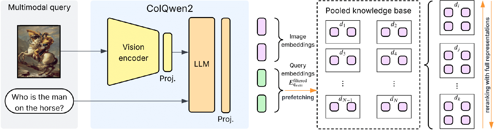
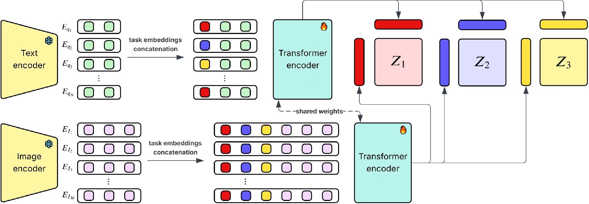
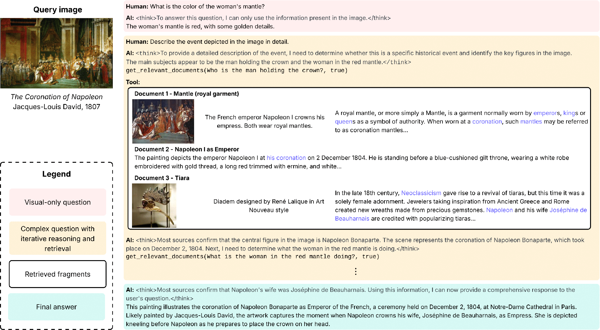
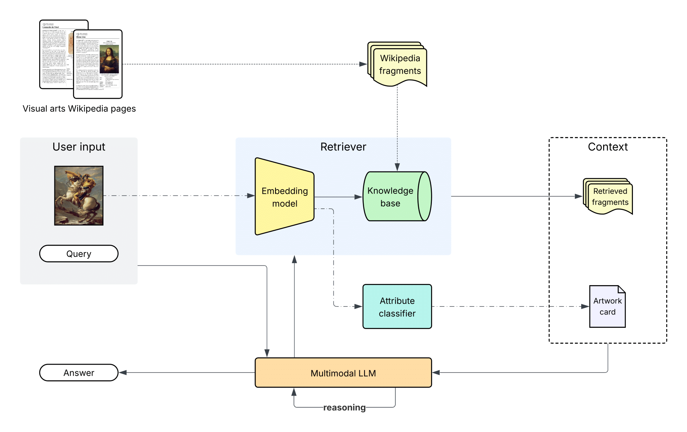
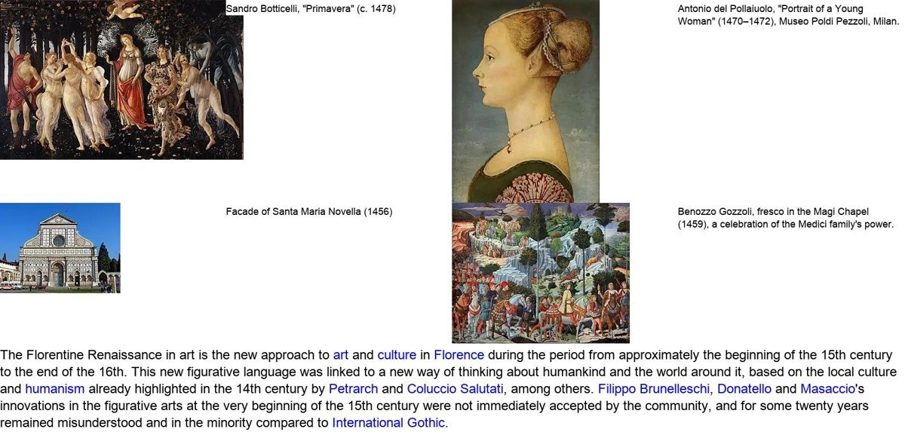
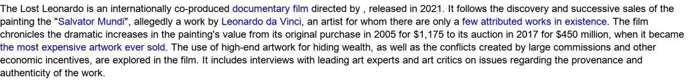
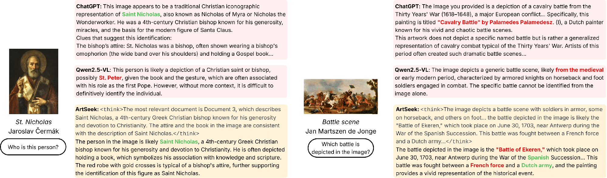

Abstract
Analyzing digitized artworks requires not only visual interpretation but also a deep understanding of rich artistic, contextual, and historical knowledge. We introduce ArtSeek, a multimodal framework for art analysis that combines multimodal large language models with retrieval-augmented generation. Unlike prior work, our pipeline relies only on image input, enabling applicability to artworks without links to Wikidata or Wikipedia, which is common in most digitized collections. ArtSeek integrates three components: a multimodal retrieval module based on late interaction retrieval, a contrastive multitask network predicting artist, genre, style, media, and tags, and an agentic reasoning strategy enabled through in-context examples. Central to this approach is WikiFragments, a Wikipedia-scale dataset of image-text fragments curated to support knowledge-grounded multimodal reasoning.
Our multimodal query encoding raises retrieval NDCG@5 from 33.9 to 44.9, and token pooling keeps late-interaction search practical over millions of fragments at under 7% of the cost of full multi-vector retrieval. ArtSeek sets a new state of the art in artwork attribute classification (+8.4% F1 on style over GraphCLIP) and gains +7.1 BLEU@1 on ArtPedia captioning. On five knowledge-grounded question answering benchmarks, retrieval helps where the answer is documented in our index or lies inside the classifier's label space (+0.19 mean correctness) and is neutral where it is not; what separates the two regimes is how much of a benchmark the knowledge base covers. The gain transfers to two non-Qwen backbones, and a blind human study corroborates the picture.
Watch ArtSeek think
Real traces from the ArtPedia-VQA benchmark: the artwork card, the fragments ArtSeek actually retrieved, its reasoning and its answer, next to the bare backbone (Qwen2.5-VL-32B). Answers are graded 0-2 by an LLM judge (phi-4). Two of the six are failure cases.
How it works

Late interaction. ColQwen2 encodes every fragment, rendered as an image, into a sequence of token embeddings. A query matches each of its tokens to the most similar document token (MaxSim) and sums the scores, which is far more expressive than a single vector.
Filtered multimodal queries. The painting and the question are encoded together, but only the question tokens are kept: they are contextualized by the image, and dropping the image tokens halves query time and raises NDCG@5 from 33.9 to 44.9.
Two stages. Candidates are prefetched on 9 pooled vectors per fragment (clustered token embeddings) and reranked on the full representations. On 10,000 fragments this keeps 27.6 NDCG@5 at under 7% of the cost of full retrieval.
N₁ = 100
on pooled vectors
N₂ = 10
full MaxSim

Late Interaction Classification Network. Frozen ColQwen2 embeddings of the image and of every label name are concatenated with learnable task embeddings and encoded by a shared transformer. Each task (artist, genre, style, media, tags) gets its own projection, and images and labels are matched in embedding space.
Contrastive and open-set. A SigLIP-style loss per task, combined with uncertainty weighting, trains it on the 116,475 ArtGraph artworks. Because it scores labels by similarity, it classifies over the whole label set and can take new classes without new layers.
The artwork card. Its predictions, with confidences, are given to the language model. They help build retrieval queries even when a field is wrong, and help most when the answer lies in the classifier's label space.

One worked example. Instead of fine-tuning, Qwen2.5-VL-32B is shown a single conversation: a visual question it answers directly, and a complex one where it calls get_relevant_documents several times, each time deciding what to look up next.
Policy that pays off. Replacing the example with a prose description of the same policy lowers correctness on all five benchmarks (+0.05 to +0.19 for the example), makes answers 52% slower, and sometimes produces no answer at all.
Any backbone. Models that cannot emit tool calls still benefit when retrieval is run before their first turn: +0.22 with Gemma-3-27B and +0.28 with Mistral-Small-3.1-24B.

The full pipeline: user input, retriever over WikiFragments, attribute classifier, and the multimodal LLM that reasons over the context.
WikiFragments
A multimodal fragment is a Wikipedia paragraph together with every image that appears above it in the page. Each fragment is rendered as one image (a grid of images and captions, then the text with its links) so that a vision-language retriever sees text and pictures jointly.


Results
Mean correctness (0-2, judged by phi-4) on five benchmarks. Hover a bar for the exact value; the last column is ArtSeek minus the backbone with its 95% confidence interval (bootstrap over paintings).
What separates the benchmarks where retrieval helps from those where it does not is knowledge-base coverage, the share of a benchmark's paintings that have a page in the index, not who wrote the questions.
Each point: ArtSeek − backbone with 95% CI. Green intervals exclude zero.
ArtPedia-VQA with the generator swapped and everything else fixed (retriever, index, classifier, prompt). Retrieval helps every backbone, most of all the weakest.
In-context example vs. prose policy
Latency per answer (s)
Shared A100, vLLM, max_num_seqs=4: upper bounds. Classification costs 0.14 s.
Zero-shot artwork explanation, standard captioning metrics. Competitors are trained on each dataset.
| Dataset | Model | B@1 | B@4 | METEOR | SPICE | ROUGE-L |
|---|---|---|---|---|---|---|
| ArtPedia | Wu et al. | 24.7 | 3.06 | 6.58 | — | 22.4 |
| Jiang et al. (KALE) | 32.6 | 7.48 | 9.33 | 7.68 | 23.7 | |
| Qwen2.5-VL-32B | 36.57 | 3.93 | 9.46 | 6.81 | 21.22 | |
| ArtSeek (w/o class.) | 39.64 | 6.16 | 10.52 | 7.73 | 23.64 | |
| ArtSeek | 39.7 | 5.26 | 10.26 | 7.74 | 23.0 | |
| SemArt v2.0 | Bai et al. | — | 9.10 | 11.4 | — | 23.1 |
| Jiang et al. (KALE) | 27.7 | 8.57 | 9.51 | 7.31 | 21.9 | |
| Qwen2.5-VL-32B | 26.49 | 1.02 | 5.91 | 3.58 | 16.89 | |
| ArtSeek (w/o class.) | 27.45 | 1.09 | 5.98 | 3.97 | 16.66 | |
| ArtSeek | 28.15 | 1.30 | 6.21 | 4.12 | 17.28 |
Multitask attribute classification on ArtGraph (Top-1 / F1).
| Model | Artist Top-1 | Artist F1 | Genre Top-1 | Genre F1 | Style Top-1 | Style F1 | Media F1 | Tags F1 |
|---|---|---|---|---|---|---|---|---|
| ResNet | — | — | 62.51 | 57.37 | 48.46 | 47.23 | — | — |
| ContextNet | — | — | 61.77 | 56.70 | 42.61 | 41.42 | — | — |
| ViT+GAT | — | — | 72.29 | 65.29 | 58.58 | 56.58 | — | — |
| ViT-Multitask | 69.93 | 58.63 | 72.78 | 65.94 | 59.98 | 57.41 | 53.55 | 39.61 |
| GraphCLIP | — | — | 72.44 | 65.06 | 61.17 | 58.22 | — | — |
| LICN (ours) | 71.75 | 65.01 | 78.54 | 73.25 | 69.80 | 66.65 | 59.49 | 39.59 |
Retrieval on 10,000 WikiFragments (half text-only, half multimodal) from an image and a question about it.
| Store | Query | NDCG@5 | R@1 | Time (cs) |
|---|---|---|---|---|
| CLIP | CLIP | 2.66 | 1.49 | 0.39 |
| Full (one stage) | Full | 33.92 | 26.90 | 67.92 |
| Full (one stage) | Filtered | 44.88 | 38.41 | 32.26 |
| Pooled (two stages) | Full | 21.50 | 17.39 | 11.14 |
| Pooled (two stages) | Filtered | 27.61 | 23.87 | 4.66 |
Human study
Three raters (two lay, one art historian) scored blind descriptions of 14 paintings from Qwen2.5-VL-32B, ArtSeek and a tool-free GPT-5.5, on what they claim: subject, figures and placement, 0-2 each (Σ, 0-6). Four of the paintings belong to a regional gallery and have no Wikipedia article.
On the gallery works ArtSeek gains +1.17 [+0.50, +2.00] Σ over its backbone and draws level with GPT-5.5. The automatic judge (phi-4) agrees with the raters at least as closely as they agree with each other.
Blind test: which description is ArtSeek?
More examples

Left: ArtSeek identifies Saint Nicholas, which the backbone misses. Right: a failure case, where retrieval suggests a plausible but wrong battle.
BibTeX
@article{fanelli2025artseek,
title = {ArtSeek: Deep artwork understanding via multimodal in-context
reasoning and late interaction retrieval},
author = {Fanelli, Nicola and Vessio, Gennaro and Castellano, Giovanna},
journal = {arXiv preprint arXiv:2507.21917},
year = {2025}
}